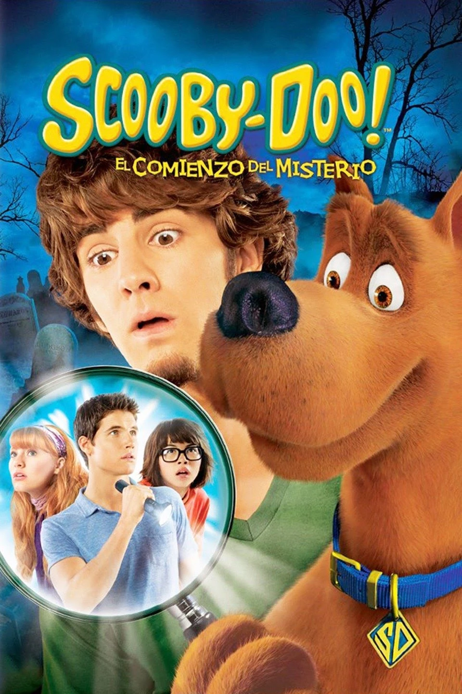
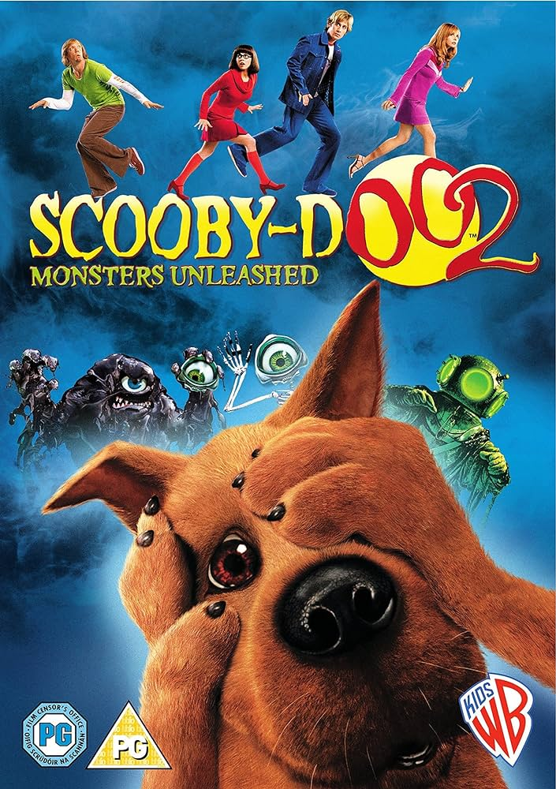
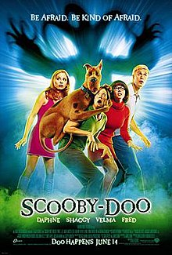
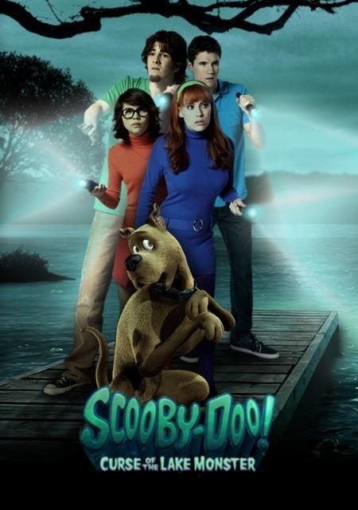

live action movies
live action movies
Why is it worth watchikng the Scooby-Doo live action movies?
The Scooby-Doo live-action movies are fun to watch because they bring cartoon characters to life with humor and adventure. They have entertaining mysteries, special effects, and are great for both old fans and new viewers. It's a mix of comedy and nostalgia that everyone can enjoy.
Top 4 best Scooby-Doo live action movies
-
The Mystery Begins(2009)
"Scooby-Doo! The Mystery Begins" is a 2009 live-action movie that shows how the Mystery Inc. gang first met. Shaggy, Scooby-Doo, Fred, Daphne, and Velma team up in high school to solve a spooky mystery. Together, they uncover the truth behind a haunting and become friends. This fun movie is full of humor and adventure, giving fans a new look at how their favorite team started.
-
Scooby-Doo 2: Monsters Unleashed(2004)
"Scooby-Doo 2: Monsters Unleashed" is a 2004 live-action movie where the Mystery Inc. gang faces their biggest challenge yet. Fred, Daphne, Velma, Shaggy, and Scooby-Doo must stop a masked villain who is bringing their old monsters to life. As they investigate, the gang deals with personal doubts and grows stronger as a team. This movie is packed with action, laughs, and classic Scooby-Doo fun.
-
Scooby-Doo (2002)
""Scooby-Doo" is a 2002 live-action film where the Mystery Inc. gang reunites to solve a case on Spooky Island. Fred, Daphne, Velma, Shaggy, and Scooby-Doo are invited to the island to investigate strange events at a popular resort. They quickly realize that supernatural forces are involved and must join forces to uncover the mystery and save the island. The movie offers humor, adventure, and the timeless excitement of Scooby-Doo.
-
Curse of the Lake Monster (2010)
""Scooby-Doo! Curse of the Lake Monster" is a live-action movie where the Mystery Inc. gang takes summer jobs at a country club. Their plans for a fun summer are disrupted when a series of mysterious events suggest that a lake monster is haunting the club. Fred, Daphne, Velma, Shaggy, and Scooby-Doo must investigate the strange occurrences and uncover the truth behind the lake monster, blending humor, adventure, and classic Scooby-Doo intrigue.
Where can I watch the Scooby-Doo live action movies?
You can watch these incredible movies in prime video